理論的背景
インタラクティブな幾何ソフトの問題点
さて、インタラクティブ な幾何ソフトを考えたときに、どのような機能が求められるでしょうか？ ある意味で、 これはどのようなソフトウェアにも言えることなのかもしれません
- ソフトウェアは使いやすいものであること。
- ソフトウェアが不自然な振舞いをして、ユーザをわずらわせるべきではありません。
- ユーザに不必要な作業を強制して、退屈させるべきではありません。
- 計算結果がいつも正しくなければなりません。
残念なことに、これらの(あたりまえとも思える)要求を満たすようなインタラクティブ な幾何ソフトを作ることはとても難しいのです。 その理由は主に次の2つです。
- 静的な状況から発生する特別な場合が起こる問題がある。
- 図を動かしたときの動的な問題が起こる。
静的問題
私たちの日常の幾何学は「特別な場合」であふれているといってもいいでしょう。 2直線について考えても、1点で交わるのが普通ですが、平行なこともあります。 2円があれば、普通は2点で交わりますが、1点で接したり交わらない場合もあります。 ですから、このような静的な作図においても、「特別な場合」に何が正しく妥当な総論であるかを判定する のは難しいことがあります。 たとえば、「2直線のなす角の2等分線」というのを問題にした命題があったとき、「2直線が平行な場合」 の解釈はどうなるのでしょうか？ 定義されない？ その2直線に平行な直線ならば何でもよい？ その2直線から等距離にある平行線？
特別な場合をすべて除外して、まったく考えないようにすることは可能かもしれません。 しかし、一方で、この作業は平行線のような平易な場合をも除外してしまうことを意味します。 もう一方で、もし点が移動することを許したとすると特別な場合が発生してしまう可能性があります。 これも静的な問題なのです。
この種の静的問題は古くから研究されています。 19世紀の偉大な幾何学者たちもこのことに気づいて、彼らの努力により、ほとんどの場合が解決されました。 解決への鍵は、ユークリッド幾何をより大きな世界へと拡張することです。 まず、普通の平面に「無限遠点」を加える方法が考えられました。 これが発展して射影幾何になりました。 そうして、その元になっている代数的構造を複素数へと拡張させたのです。 この拡張により、本質的には特別な場合はすべて排除されるのです。
その後、数学が発展して、この問題に関しては1870年ころ、まったく矛盾を含まない体系が考え出されました。 この体系では、ユークリッド幾何のできごとと同時に、非ユークリッド幾何、たとえば双曲幾何、のできごとをも説明できるのです。 現在では、体系を考え出した主たる2人の数学者の名前をとって、ケーリー-クライン幾何と呼ばれています。
シンデレラはこの方針を数学的背景として実装しています。 つまり、シンデレラはすべての「静的例外」に対応できるようになっています。 その上、ユークリッド幾何と同じ感覚で非ユークリッド幾何を取り扱えるのです。 おもしろいことに、このようなとても一般的な原理を用いたにもかかわらず、プログラム自体はさほど複雑ではないのです。 むしろ、静的例外を場合分けしなくて済んだため、プログラムは「素直な」もので十分だったのです。
動的問題
インタラクティブ な幾何ソフトを作成しようとすると、 もう1つの問題が立ちはだかります。 ある意味、静的例外よりもたちの悪いものです。 不幸なことに、この問題は時に重大な影響を与えることもあります。 あなたが、作図によって点を得ようとしている状況を想像してください。 たとえば、2直線の交点とか、2円の交点とか、直線と円の交点とか． あなたがマウスで図を動かしたとき、プログラム側では交点がどこにあるのかを(どのような状況においても) 決めなければいけません。 2円は1点で交わることは普通ありません。 2点で交わります。 プログラム的にはその両方の点が計算されています。 さて、プログラムはどうやって「ユーザが望んでいるほうの答え」を決めることができるのでしょうか． 交点を作図するときは、まだ簡単かもしれません。 というのは、「マウスに最も近い場所にあるほう」というふうにすればできなくはないでしょう。 しかし、図を動かしてしまうと、話はとたんに難しくなります。
もっとも望ましいことは連続的に答えが決まるようにすることでしょう。
もし、あなたが自由点をほんのわずか動かしたならば、それに従って図のほうも少しだけ動くということです。
ちょっと見ただけでは、この決め方が一般にみたされているかどうか、はっきりしません。 あなたのお好みのインタラクティブな幾何ソフトかパラメトリックCADを使って、次のような実験をしてみてください。 まず、水平な直線を引きます。 そして、その直線上に中心を持つような、半径の等しい2つの円を描いてください。 それが交わるようにして、上のほうの交点に名前をつけましょう。 さて、一方の円を水平な直線に沿って動かして、もう一方の円を通過させてください。 さて、交点はどうなるでしょうか． よく起こりがちな現象として、2円が重なったとたん交点は瞬間にジャンプして下の交点になってしまっていませんか． この現象は著者が試してみたどのソフトウェアでも起こることなのです。 そして、この現象は私たちが求めている「連続的変形」という性質に反しているのです。 つまり、円をほんの少し動かしただけなのに、交点が大きくジャンプしてしまった、というわけです。
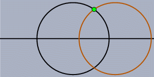 |
| This should not happen! |
最初は、ただ点が飛ぶくらいなら、奇妙だと思うくらいで、我慢の範囲内でしょう。 しかし、たとえば、ジャンプしてしまう点に依存して多くの部分が作図されていたら？ するとこのような部分もまた 警告もなくジャンプしてしまいます。 ほとんどのインタラクティブな幾何ソフトは方向決定にもとづく発見的な方法に よっていくつかのジャンプする状況をとり除いています。 しかし、どのソフトでも、いまだに解決できない状況がたくさん残っています。 実際「動的問題のすべてを方向決定のみにもとづく発見的な方法では解決できない」ということの証明がなされています。[Kor99], [KRG01], [RGK02]を参照してください。 ある動的幾何の論文 [Lab97
私が思うに、より広い(動的な)幾何へ向けた、幾何の拡張の純粋数学的な取りあつかいが必要だ． もし、動的幾何学の核にある非静的対象の特徴を最大限考慮に入れようとするならば、この幾何は射影幾何とは 違うものだろう。
シンデレラは、作図において従属的な点のジャンプを排除することのできる理論を用いた最初のソフトウェアでしょう。 この理論は複素数も用いています。 複素数は静的な問題を解消するのに用いられています。
この理論を用いることにはいろいろ便利な点があります。 たとえば、正しい軌跡を描くのにも用いられています 4節リンク機構 の例(チュートリアルの2番目)を思い出してみましょう。 この例では、「動かす点」を動かしたときに、2つの円の交点を正確に計算することによって軌跡を描いています。 ほかのインタラクティブな幾何ソフトでは、この8字型の図形の半分しか描かれないでしょう。 そのほかにも、自動的に定理を確認する機能がシンデレラにはついていますが、この部分にもこの理論が応用されています。
 |
| 4節リンク機構(再掲) |
次に、シンデレラの実装の基礎をなすいろいろな数学理論について説明します。
射影幾何学
一貫した幾何学の体系のために、最初にすべき、しかもおそらく最も重要な段階は、ユークリッド平面に無限遠点を追加することではないでしょうか． きっと、「平行線は無限遠点で交わっている」というフレーズをどこかで聞いたことがあるでしょうし、もしどこまでもまっすぐな2本のレールを陸橋の上からみれば、このことは誰もが信じることではないでしょうか． この考え方が、「射影幾何」の鍵となる考え方なのです。 無限遠点を追加して幾何を考えることにより、ユークリッド幾何にあった多くの「例外」が解消されるのです。
射影幾何はとても長い伝統をもっています。 歴史的な起源は、あの有名な画家のアルブレヒト・デューラーとレオナルド・ダ・ビンチたちがはじめた「遠近法」の研究までさかのぼらなければなりません。 数学的な起源はフランスの幾何学者のガスパール・モンジュ(Gaspard Monge)の研究です。 彼は1795年ころ、空間図形を平面に投影して表すという図形幾何(descriptive geometry)と呼ばれる方法を編み出しました。 モンジュは平面図形に関する明らかでない幾何の事実が、平面図形を空間図形の投影と考えることによって導けることを発見しました。 投影を用いた平行線は、無限遠点を平面に追加することによって最も簡明に理解されたのです。
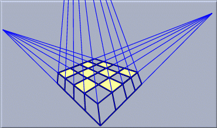 |
| 射影では平行線は本当に交わる |
射影平面は普通のユークリッド平面に、平面上の各方向に対し1つの「無限遠点」を付け加えた空間です。 射影平面上の直線とは、ユークリッド平面上の直線および、「無限遠点にある直線」という1本の特別な直線です。 すべての無限遠点はこの無限遠にある直線の上にのっています。 すると、次のような、点と直線についてのみごとな対称的関係が成り立ちます。:
- すべての異なる2点を結ぶ直線はただ1つである。
- すべての異なる2直線の交点はただ1点である。
この定式化が行われたのは、1822年ころで、ビクトル・ポンスレ(Victor Poncelet)によるものです。 彼はモンジュの学生で、現在では「射影幾何の父」と呼ばれています。 射影幾何では平行を特別なものと考える必要はありません。 平行線であってもやはり交点を持ちますし、その交点は無限遠方にあるというだけのことです。 射影幾何学のちょうどよい参考書として、H. S. M. コクセターの本[Cox1, Cox2]をあげておきます。
同次座標
不幸にして、コンピュータで私たちは幾何的な対象をそのままのものとして取り扱うことはできません。 つまり、点や直線を座標や数で表現しなければならない、ということです。 普通なら平面上の点は(x, y)座標によって書き表します。 直線であれば、定義となる方程式 ax + by + c = 0における3つのパラメータ(a, b, c)によって書き表します。 しかし、射影幾何で考えようとするならば、この方法は実際的ではありません。(x, y)座標に書き表される点は有限の点であって、無限遠点を書き表す方法がないからです。 この問題に対する正しい解答は19世紀の前半に次第に解明されてきました。 まずはメビウスによる「重心座標」、そしてプリュッカーによる「同次座標」を経てグラスマンによる「多重線形代数」へと導かれていったのです。無限遠点のジレンマから逃れる方法は次のような手順です。 まず、各点について、2次元座標を用いる代わりに、第3の次元を導入して3次元座標を用いることにします。 次のように考えてください。 平面が空間の中で、xy 平面に平行であるとして、高さが z=1 の場所にあると思ってください。 すると、この平面は空間の原点は通りません。
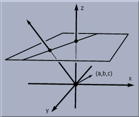 |
| 平面を空間に埋め込む |
(x, y)とかかれていた点は、ここでは空間内の(x, y, 1)という点で表されます。 この座標こそが「同次座標」なのです。 空間内のほかの点はどのようになっていると考えればよいのでしょうか？ ほとんどの点は、この平面の点と同じ点であると解釈します。 つまり、空間内の点に(ゼロでない)定数倍をしても同じ点であるとみなすことにするのです。 たとえば、点(4,6,2)と点(2,3,1)とは同じ点を意味していると考えるのです。 一般に、空間座標の点(x, y, z)は(この定数倍の法則により)点 (x/z, y/z,1)と同じ点で あるとみなすことができ、点(x/z,y/z,1)は最初の平面の上にある点なのです。 この計算のことを「反同次化」と呼びます。 この方法で、元の平面の点 A は、空間の原点と点 A を通る空間直線(上のすべての点)と同一視する(同じものであると思う)ことができます。
ここで、「反同次化」できない空間上の点があることがわかるでしょう。 それは(x, y, 0)という形で書かれる点で(z=0だとzで割ることができないから)、こういう点は元の平面に対応する点がないのです。 じつはこういう点を「無限遠点」であると理解すれば射影幾何を正確に記述できたことになるのです。 このことをさらに理解するために、元の平面上の点を無限遠点に近づける作業を実際に調べてみましょう。 (訳註：「無限遠点に近づく」とは変な言い方だと思うかもしれません。 無限遠点はどこまで行ってもたどり着けない点の意味ですから、「近づく」ことは元からできないはずなのです。 しかし射影幾何など近代の幾何では、無限遠点も私たちが目で見ることのできる点であって、その点に近づくこと は十分可能であると考えるのが普通です。)
さて、元の平面上の(r, r)という点を考えて、r をだんだんと大きくしていった場合を考えましょう。 すると、45度の方向で、だんだん無限遠点に近づいていくことがわかるでしょう。 さて、これを同次座標で考えるとどうなるでしょうか． 同次座標では(r, r, 1) と (1, 1, 1/r)とは同じ点とみなすことになっていました。 (これを(r, r, 1) ~ (1, 1, 1/r)と書くのが普通です。) さて、r を増やしていった場合、同じ点であるとみなされる点(1,1,1/r)は点(1,1,0)に近づいて、r を無限に大きくする極限では等しくなってしまいます。 つまり、点(1,1,0)は同次座標においては無限遠点の1つであると考えることができます。 別の考え方を説明しましょう。 (r,r,1)と空間の原点(0,0,0)を結ぶ直線を考えましょう。 r をだんだん大きくしていくと、直線はだんだんと水平な直線へと近づいていきます。 ですから、その極限の形を考えると、完全に水平な線、つまり xy 平面に含まれる直線であることがわかります。 これは(1,1,0)と空間の原点(0,0,0)を結ぶ直線となっているのです。
直線についても同じように表現できます。 直線の方程式 ax + by + c= 0 において、 そのパラメータ(a, b, c) は空間の同次座標であると考えることができます。 点の場合と同様、この座標をゼロでない定数倍したものも同一視します。というのは、この場合、 (a, b, c) にゼロでない数をかけても、同じ方程式を意味しているからです。 こうして考えていくと、(0,0,1)というパラメータに対応する有限の直線がない (訳註：もとの方程式で書くと 0x + 0y +1 =0 となってしまうから．) のですが、これがちょうど「無限遠にある直線」であることを観察することができます。 空間幾何の性質により、(a, b, c) というベクトルに直交する(空間内の原点を通る)平面は、元の平面上の直 線 ax + by + c = 0 を通っているのです。 (訳註：「元の平面」が z=1と書かれていることに注意すれば、容易に証明できます。) 特に、(0,0,1)の場合を考えると、ベクトル(0,0,1)に直交する(原点を通る)平面とはすなわち xy 平面にほかならず、「無限遠にある直線」であることがわかります。
こうして、すべての点と直線が同次座標というパラメータで表示できることがわかりました。 点と直線の間には完全な対称性があるのです。 点と直線があって、点が同次座標で(x, y, z)、 直線が同次座標のパラメータで(a, b, c)と表されていたとしましょう。 点が直線上にあるためには内積 ax + by + cz がゼロと等しくなる場合に限ります。 証明は、直線の式を書き直してみれば簡単にわかります。 幾何的な意味としては、点が直線上にあるということと、2つのベクトルが空間内で直交しているということが同じ意味を持っていることがわかります。
複素数
何世紀もの間、幾何学だけが発展したわけではありません。 数の概念も同様でした。 おそらく、人類が最初に考えた数は自然数、つまり1, 2, 3, ...だったでしょう。 その後、数をより広い意味で使うために、数の概念が拡張されてきました。 便利な閉じた(四則演算の結果が含まれる)数の体系を得るために、「負の数」、「分数(有理数)」、「実数」が考え出されました。 紀元前600年ころには、幾何学の観点から、2つの整数の比で書き表せない数があると考えられていました。 ピタゴラス学派によって、一辺の長さが1の正方形の対角線の長さが分数で書き表せないことが発見されました。 ピタゴラスの定理を用いれば、これは、x² = 2 を満たす数を見つける問題と言い換えることもできます。 この発見は古代幾何学の基礎において深刻な危機を導くことになりました。
しかし、数の体系を拡張する物語はここで終わったわけではありません。 いくつかの拡張の中で、もっとも劇的だったのは、「複素数」の導入でしょう。 それは1545年に書かれたジェロニモ・カルダノの『アルス・マグナ』という本に現れました。 カルダノは実数の拡張として複素数を初めて明確に導入したのです。 彼は3次方程式の解の公式の研究から、この複素数を考え出したのです。 当時のさまざまな数学者の研究に基づいて、彼は3次方程式の解の公式を完全に体系的に記述するには、当時知られていなかった数を導入する必要があると考えたのです。
複素数は a + i·b という形で書き表される数です。 ただしここで、i は公式 i² = –1 を満たす数で、a と b とは実数であるとします。 明らかに i は実数ではありえません。 というのは実数であるならば2乗した数が負になることなどありえないからです。 複素数全体という集合を考えたとき、足し算と掛け算について閉じている(計算結果が再び複素数として書き表せる)点では、実数と同じであることが容易にわかります。 (訳註：少し考えれば(0以外の)割り算についても閉じていることが容易にわかります。) しかし、複素数が実数と異なる点は、多項式の根を取るという操作についても閉じているという点です。 たとえば、次の多項式を考えてみましょう。
| x² – 6x + 13 = 0. |
2次方程式の解の公式を使えば、この方程式が実数の解を持たないことが容易に証明できます。 しかし複素数の範囲を許せば、3 + 2iと3 - 2i という2つの解を得ることができます。 実際には、次の大変美しい結果が成り立ちます。
複素数を係数とする任意の n 次多項式について、その根は必ず(重複を許せば) n 個の複素数である
ある意味で、複素数の発見はほとんどの現代数学の出発点になったのです。 複素数を用いて定式化をしなおすことによって、多くの数学理論をより広く、より簡明に、より簡素に取り扱うことができるようになったのです。 幾何学においても同じことです。 2つの円がある場合を考えてみてください。 2つの円の位置関係によって、交点の個数はなし、1つ、2つの3通りあります。
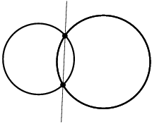 | 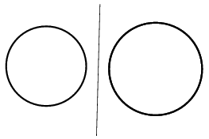 |
| 円は交わる場合もありますが... | 交わらない場合もあります |
この交点の座標を求めることは、連立2次方程式を解くことに他なりません。 実数の範囲で解を求めると、解がないということもありえます。 そのときは、円が交わっていないのです。 複素数の範囲で解を求めると、いつでも解は存在します。 ですから、見た目の円が交わっていないときにも、交点は存在している、ということができます。 ただ、複素数の範囲で存在しているので、実数の平面で見ることができないだけなのです。
シンデレラのプログラムの数学的な部分はすべて複素数の計算を行っています。 ですから、見た目に交点がなくても、シンデレラはそれを特別な場合として場合分けするのではなく、交点の座標が実数でない、と判断して計算を進めるだけなのです。
2つの複素座標の点が直線で結ばれるとはどういうことなのでしょうか． 一般に、この直線も複素数の係数を持つものになります。 しかし、もしその2点が複素共役であった場合(つまり実数部分(実部)は等しく複素数部分(虚部)の符号だけが異なる場合)、この2点を結んだ直線は再び実数係数になります。 (訳註：2点(a+bi,c+di), (a-bi,c-di)を通る1次式 px+qy+r=0 を解くと、p,q,r の比は必ず実数になります。) 2円の2つの交点は共に実数であるか、あるいは複素共役になりますから、その2点を結ぶ直線は実数係数なのです。 シンデレラはこれを正しく計算して直線を描くのです。 2円の位置関係によりません。 2円の交点を結ぶ直線からさらに作図を進めたとすると、2円の交点自体は消えてしまっても、その先の作図が消えずに残ることがあります。 このことに慣れるのには少し時間がかかるかもしれません。 しかしながら、これはまさに望ましいことなのです。 たとえば、同じ半径の2円の場合で考えると、2交点を結ぶ直線は、2つの中心を結ぶ線分の垂直2等分線になっています。 これは複素係数で考えれば、2円が交わっていても交わっていなくとも成り立っている事柄なのです。
もう1つ例をあげましょう。 3つの円についての次の定理は、中途の段階が見えなくなってしまっても依然として成り立っている例です。 3つの円の中から2円を選んで、その2交点を結ぶ直線を考えます。 (訳註：この直線を2円の根基線(radical line)と呼びます。) このような直線は全部で3本引くことができます。 実はこの3直線は1点で交わることがわかります。 しかし、この定理は、3円が交わっていても交わっていなくてもいつでも成り立つ事柄なのです。 (訳註：この1点を根基点(radical point)と呼びます。)
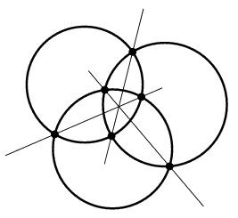 | 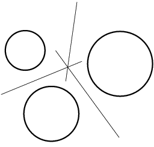 |
| 中途の段階では複素数になるかもしれませんが | ...定理は成り立ちます |
ですから、シンデレラでは点や直線は複素同次座標で表現しているのです。 つまり内部情報としては、各点、各直線は(実数で言えば)6つのパラメータを持っているのです。 とんだことだと思われるかもしれませんが、これはもっとも自然な成り行きなのです。
長さと角度と複素数
もし私たちが射影幾何で満足したならば、ここまで書いてきた内容でだいたい完全だと思うでしょう。 しかし、私たちは、さらに距離を測ったり、角度を測ったりしたいのです。 こういう量を測ることはある意味では幾何学の基本です。 しかし残念なことに、射影幾何学は一見したところ距離を測ることができません。 というのは、投影してしまうことにより距離が変わってしまうのは明らかだからです。 実際、長い間、数学者たちは射影幾何学を「面白いおもちゃ」ではあるが、距離や角度を実際に測るには不適当だと考えてきたのです
歴史はそれが間違っていることを示しました。 正しく定式化すれば、射影幾何学は距離・角度を測るための唯一のすべての場合に通用する体系なのです。 この体系はさまざまな異なった距離・角度の測り方をいっしょに説明することができるのです。 たとえば、ユークリッド幾何と双曲幾何を同時に説明できます。 しかしながら、射影幾何学が十分に力を発揮できるほどに代数的に整備されるのにはとても時間がかかりました。 現在では「ケーリー-クライン幾何学」と呼ばれているものです。 この幾何学により、距離・角度に対し簡素で矛盾のない数学的なアプローチをすることができ、またそれは射影幾何学と複素数とを結び付けてもいるのです。
ユークリッド幾何と非ユークリッド幾何
この発展は非ユークリッド幾何学の発見により始まったともいえます。 私たちの日常の幾何学はユークリッドの提唱した5つの公準により記述されています。 ユークリッドはこの5つの公準を正しいと仮定して、幾何学の定理をそこからすべて導き出しました。 これがだいたい2000年前のことです。 5つめの公準がいわゆる「平行線公準」で、この公準が幾何学の発展に特別な役割を果たしました。 (訳註：平行線公準がユークリッド幾何学を特徴づけていると言うこともできます。) この公準はたとえば次のように表現することができます。 平面内の直線l と、その直線上にない点 P について、P を通り直線 l と交わらない直線がただ1つ引ける。
ユークリッドは平行線公準を使うことに非常に慎重でした。 ユークリッドの導いた定理の多くの部分は(たとえば2つの三角形の合同に関する定理)まったく平行線公準を使わずに示されています。 ユークリッド自身も、平行線公準は他の4つの公準の帰結である (訳註：数学ではこれを「従属な公準」と呼びます) と考えていたと見るのが有力です。 しかしユークリッドはそれを証明することはできませんでした。 ユークリッド以後多くの数学者がこのことに挑戦しました。 幾人かは証明を発表さえしたのですがどれも誤りを含んでいました。
16世紀から18世紀にかけて、数学者たちは平行線公準と同値な命題をいくつも見つけました。 もっとも有名なのは、「三角形の内角の和は180度である．」 というものでしょう。 もし、ユークリッドの最初の4つの公準からこの命題が証明されれば、平行線公準は従属な公準であることになるのです。
ある公準が従属であることを証明するには、背理法を用いて、その公理を否定して論理を進めて矛盾を導かなければなりません。 多くの数学者がこの問題に挑み、その中にはガウス(C.F. Gauss)、ボーヤイ(J. Bolyai)、ロバチェフスキー(N. Lobachevski)らも含まれていました。 この3人は平行線公準を否定して論理を進め、驚くべきことに、矛盾を証明する代わりに新しく美しい幾何学体系の存在を示したのでした。 それが今で言うところの双曲幾何学(hyperbolic geometry)です。 この幾何学では平行線公準を次のように置き換えて、そして立派に幾何学が成立しています。 「平面内の直線 lと直線外の点 P に対して、P をとおり l に交わらない直線が2本以上存在する．」 この新しい公準からは三角形の内角の和が180度より小さくなることを導けるのです。 1815年から1824年にかけて、これら3人の数学者がお互いの仕事を知ることなく別々に証明していたので現在ではこの3人の数学者が双曲幾何学を発見したと考えることにしています。 彼らはどんな矛盾も見つけることができなかったので、発見した体系には矛盾がないと宣言するにいたったのです。 彼らが発見した体系は内なる美しさを秘めたもので、平行線公準を少し変えただけの公準から合同変換が全体の集合を決定していたのですから、これは驚きに値するでしょう。
特記すべきは、おそらく3人の中でガウスが最初にこれらの結論に達したと思われることです。 1816年ころだと言われています。 しかし、かれはその結果をあえて公表しませんでした。 理由としては、当時カント哲学主導の学会との衝突を恐れたためだといわれています。 当時の一般的な考え方では、直線は「アプリオリ(＝経験によらない)」で自明な対象だと考えられていたのです。
もし、数学の歴史についてもっと知りたければ、ベルの本 [Bel1], [Bel2] とシュトルイックの本 [St]を紹介しておきましょう。 双曲幾何の入門書としては、M. J. グリーンバーグの本 [Gre] を紹介しておきます。
ケーリー-クライン幾何学
長い間、双曲幾何学の体系がまったく矛盾を含んでいないかどうかを明らかにはできませんでした。 足りなかったのは、この双曲幾何学のモデルでした。 つまり、ユークリッドの最初の4つの公準と変形させた平行線公準をみたすような数学のモデルがあるか、ということだったのです。 やや問題点はありましたが、最初に1868年にベルトラミが新しいモデルを作りました。 しかし、完全で美しいモデルを作り上げたのはフェリックス・クラインでした。 彼はプリュッカーの弟子で、クラインの考え出したモデルは現在「ケーリー-クラインモデル」と呼ばれています。 たとえば [Kl2]を見てください。 彼が示したモデルは本質的に双曲幾何学をユークリッド幾何学に帰着させたもので、つまり、「もしユークリッド幾何学が無矛盾であるならば、双曲幾何学も無矛盾である」 ということを意味します。 こうして、ユークリッドの5つ目の公準に関する問題が解かれたのです。
ケーリー-クライン幾何学の背景にある考え方は、射影平面を用いること、そして、特別な2次曲線を「基本的な対象」として区別して考えることでした。 大域的な量(長さ、広さなど)はこの基本的な対象にのみ依存して定義されます。 基本的な対象として何を選ぶかによって、幾何学の種類が変わってくるのです。 ユークリッド幾何、双曲幾何、楕円幾何、相対幾何、そしてほかの3種類のマイナーな幾何学などは、みなこの方法で定義することができるのです。
私たちはケーリー-クライン幾何学の細部までここで立ち入るつもりはありませんが、ここでおもな定義といくつかの基本的な性質を説明したいと思います。 まず、1直線上にある4点 A, B, C, D に関する複比を定義します。 複比とは
| (A, B | C, D) := ((A – C)(B – D)) / ((A – D)(B – C), |
という式で定義できる数です。 ここで、(A – C)はユークリッド幾何だと思ったときの点 A と C の距離を意味します。 この複比はユークリッドの距離を使わずに定義することもできるのです。 幾何学の定義において堂々巡りが起きないように取り扱うためには、このような配慮は重要なのです。
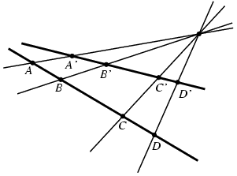 |
| 複比 |
複比は射影幾何学においては大切です。 というのは、この値は射影変換によって変わらないからです。 ですから、もしある直線上にある4点 A, B, C, D が射影によって別の直線上の4点 A′, B′, C′, D′に写されたとき、その複比は同じ値をとることが証明できます。
この考え方でいくと、1点 P を固定して、点 P を通る4本の直線に関する複比を定義することもできます。 というのは、点 P を通らないような直線を1つ選び、その直線との4交点について複比をとればよいからです。
ここまでくると、ケーリー-クライン幾何学の定義は簡単です。 2次同次式
| x² + y² + cz² + exz + fyz = 0. |
をとり、 この方程式をみたす点全体(複素数の場合も同様に考えることにします) は射影平面内の2次曲線です。 これを幾何学の「基本的な対象」とすることにします。 そしてこの世界における距離と角度を次のように定義することにします。 まず2点 A,B の距離を求めるには、この2点を結ぶ直線を考え、その直線と基本的な対象としてさだめた2次曲線との交点(通常2箇所で交わります) を点 X,Y とします。 そのとき、複比(A, B | X, Y)の対数を、 2点間の 距離 とします。
2直線のなす角度も似たような方法で定義します。 2直線 L, M が交わっているとしましょう。 その交点から、基本的な対象として定めた2次曲線への接線(通常2本引けます) を直線 P, Q とします。 そのとき、複比 (L,M | P,Q) の対数を、2直線のなす角度と定義するのです。 しかしこのままだと、従来の定義の方法と定数倍だけ違ってしまうので、定数 r と s をとって、定数倍しておきます。
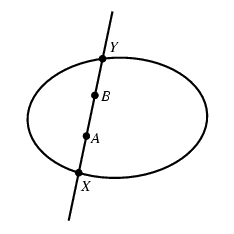 | 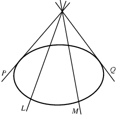 |
| dist(AB) = r·ln(A, B | X, Y) | angle(LM) = s·ln(L, M | P, Q) |
なんだかだまされているように思うかもしれませんが、これですべて分かってしまうのです。 基本的な対象の選び方によって、異なる型の幾何学がそこに構成されます。 幾何学間の同型を除けば、全部で7種類の幾何学を構成することができます。 主な3つについて基本的な対象として選ばれる2次曲線は次のとおりです。
- 円 x² + y² - z²= 0 のとき 双曲幾何
- 退化した2次曲線 x² + y² = 0 のとき ユークリッド幾何
- 非自明な実解のない方程式 x² + y² + z² = 0 のとき 楕円幾何
次の2つはとても重要な事柄です
- ユークリッド幾何学の距離をこの方法で定義しょうとするときには、すこし工夫をします。ケーリー-クライン幾何の 公式のままでは、異なる2点の距離はいつも0になってしまうからです。 (訳註：ユークリッド幾何の場合は、いつでもlog(A,B|X,Y)=0となってしまいます。この点は京都大学の小林俊行さんに 教えていただきました。)これはユークリッド幾何において「絶対的な」距離の概念がないという事実に由来していることです。 線分の長さは「単位長」との比によって決められなければいけません。正しい公式は、極限を用いて直ちに得ることができます。
- 上の構成法において、2次曲線との交点や2次曲線への接線がでてきますが、これらは実数の係数を持つ点や直線とは限りません。 たとえば、楕円幾何学においては、絶対形は実数部分を持たないので、直線との交点の座標は必ず実数以外の複素数になります。
シンデレラにおける距離・角度はケーリー-クライン幾何学に基づいて計算しています。 長さ、角度、直交しているか、円などは「基本的な対象」に照らし合わせてすべて計算しています。
このような一般論を用いたことにより、少なくとも1ついいことがありました。複素数、複比、射影幾何がどのように距離や角度とかかわっているか、感覚をわかっていただけるということです。
ユークリッド幾何の場合を考えましょう。基本的な対象は x² + y² = 0という方程式です。 複素数を使ってこれを因数分解すると、 x² + y² = (1·x + i·y + 0·z) と x² + y² = (1·x – i·y + 0·z)となっています。 点 I := (1, i, 0) と J := (1, –i, 0) はユークリッド幾何においては特別な役割を果たすことがわかります。 ユークリッド変換において、この2点は変わりません。 ですから、標語的に、「ユークリッド幾何は射影幾何に2点 I と J とを付け加えた幾何だ」ということができます。__
2点 I と J は虚円点と呼ばれることがあります。 というのは、この2点は円と特別な関係にあるからです。 つまり、すべてのユークリッドの円はこの2点を通るのです。 このことを確かめるには、同次座標での一般的な円の方程式
| x² + y² + cz² + exz + fyz = 0. |
を考えてみればわかります。
さてこの式に2点 I と J の座標を当てはめてみましょう。 複素数の計算の規則にしたがって値を代入してみると、上の方程式を正しくみたしていることがわかります。 つまり、円とは、この2点を通るような特別な2次曲線、と特徴付けることができます。 円の概念が決まれば、容易に「距離が等しい」とか「角度が等しい」という概念を導き出すことができます。 ユークリッド幾何のその他の部分はみんな円の概念から直接導き出されます。古典的なケーリー・クライン幾何学については [Kle28]にあります。また、射影幾何学を含む現代的な問題については [RGO09] and [RG11]にあります。
連続の原理
このマニュアルの前書きにも書いたように、シンデレラでは矛盾した振舞いが生じないような新しい工夫がなされています。 前の節で紹介した幾何学体系は、距離・角度を含んだ幾何を行うのに十分な、完結した理論なのです。 しかし、これだけでは、シンデレラにとって非常に重要な要素が欠けています。それは動的な問題への対応です。 ほとんどの他のインタラクティブ な幾何のソフトやパラメトリックなCADソフトでは点の動きに対する作図の変化に生ずる特別な現象に十分に対応しているわけではなく、そのために矛盾が起こってしまうことがあります。 たとえば、三角形の内角の2等分線は1点で交わるという定理があります。 直線の組を考えると、そのなす角の取り方は二通りあり、角の2等分線は互いに垂直な2本の直線です。 (三角形という見方からすると、内角の2等分線と外角の2等分線との2種類ありえるということです。) つまり、どこが内角でどこが外角であるかを判断できなければ、この定理は成り立つとは限らなくなってしまうのです。 さて、この定理を図上で実現することを想像してみましょう (つまり、角を正しく選ぶということです)． その後で、三角形の頂点の1つをマウスでドラッグして動かしてみましょう。 動かしている途中で、突然何の前触れもなく、角の2等分線の取り方が変わってしまって、「定理」が成り立たなくなってしまうのです。点を動かすことによる作図全体の変化からくる特別な問題への対策がなされていないと、こういうトラブルは起こり得るのです。
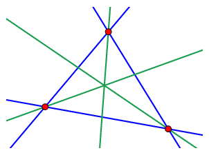 | 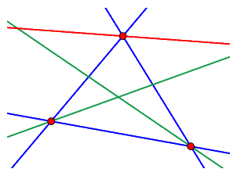 |
| 角の2等分線は1点で交わるか | 交わらない |
もう1つ、別の簡単な例を考えてみましょう。 2つの円を交わるように描き、その交点の1つに名前を付けます。 円を自由に動かして、交点がどうなるか見てみましょう。 特に、一度2円を交わらない位置まで離してそしてまた交わる位置に持ってきた時に、交点が2つのうちどちらになっているかを見てみましょう。 この作業中にシンデレラは「2つのうちどちら」がユーザにとって望ましい交点であるべきかを判断しなければいけないことになります。
もし交点が消えていない範囲での作業については、「寸前まで近くにあったほうの交点が望ましい交点」であることは明らかです。 というのはこの方法が連続の定義を正確に反映しているからです。 しかし交点が消えてしまった場合、どうすればよいのでしょうか？ ここでやはり複素数による処理を考えなければなりません。 シンデレラのプログラム内では複素数を用いているので、2円の交点が消滅してしまうことはありません。 そこで複素数の空間で、「寸前まで近くにあったほうの交点が望ましい交点」という約束に従って交点を選んでいます。
しかし、これだけでは十分ではありません。 というのは、2円の交点がなくなってしまう、まさにその時、円と円は一瞬接している状態になり、つまり2交点が一致してしまうのです。 この瞬間の前と後とで一貫性のある選択ができるにはどうすればよいでしょうか？ こんどは解析関数論の助けを借りることになります。 もし複素平面内での「遠回り」が許されるならば、2交点が一致してしまう状況を避けて計算することができるのです。 これも、作図計算が複素数で行われているということから可能なことなのです。
「点を動かす」モードでマウスを1つの地点 A から別の地点 B へと移動した 時に何が起こるかをだいたい記述してみましょう。
- シンデレラは A から B への複素数空間を通る道の中で、上に書いたような「接する状況」 にならないようなものをひとつ考えます。
- 「依存している要素」を複素数で座標計算します.
- 道の上に(通常は等間隔に、そして状況に応じて十分細かく)点列をつくり、 点列のそれぞれの点にカーソルがあるものとして計算を行い、「連続性」をみたすように「依存してる要素」の計算を行います。
シンデレラでは「適応性刻み幅アルゴリズム」(adaptive step width algorithm)を用いています。 あなたが作図上の頂点を動かしているとき、マウスは「実画面」を動いているように見えますが実際には「複素平面」 (訳註：四次元世界！) の中を動いているのです。
どうしてこんな面倒なことをしなければいけないのでしょうか？ 理由は1つ． この方法ならば、理由のない「ジャンプ」を完全に防げるのです。 ですから、はじめに「3角形の内角の二等分線は1点で交わる」という図を正しく書ければ、あとはいくら図を動かしても交点が交わらない図にはならないことが保証されます。 (訳註：しかし、頂点の動かし方によっては、「内心」の作図をしてもそれが「傍心」になってしまうことはありえます。 念のため。) この理論は自動定理確認理論の信頼性や、シンデレラのアニメーションおよび軌跡の機能の基本をなしています。
(阿原)
Page last modified on Thursday 01 of September, 2011 [09:24:25 UTC].
The original document is available at
http://doc.cinderella.de/tiki-index.php?page=Theoretical%20BackgroundJ